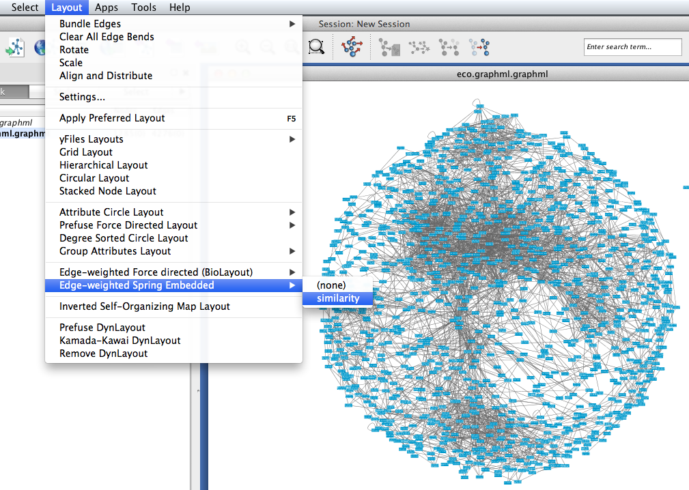
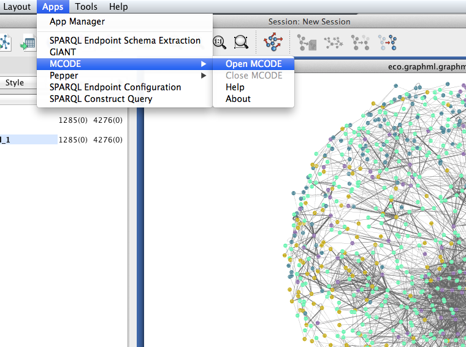
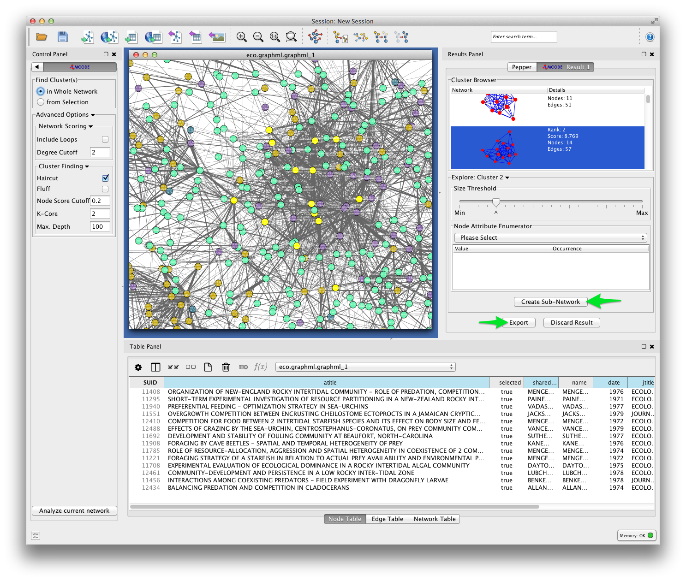
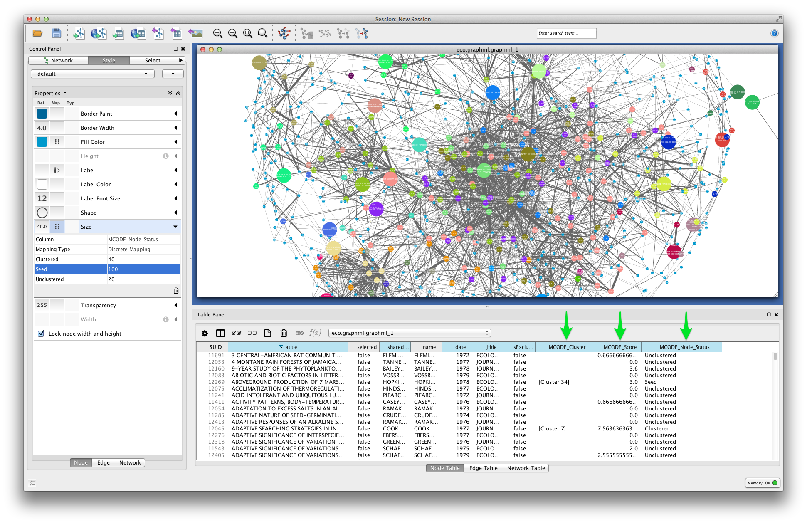
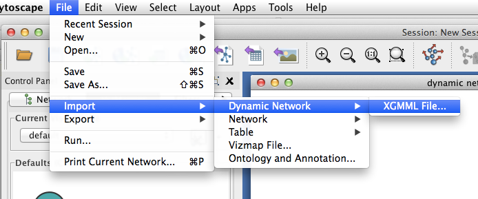

Bibliographic Coupling¶
Bibliographic coupling can be a useful and computationally cheap way to explore the thematic topology of a large scientific literature.
Bibliographic coupling was first proposed as a method for detecting latent topical affinities among research publications by Myer M. Kessler at MIT in 1958. In 1972, J.C. Donohue suggested that bibliographic coupling could be used to the map “research fronts” in science, and this method, along with co-citation analysis and other citation-based clustering techniques, became a core methodology of the science-mapping craze of the 1970s. Bibliographic coupling is still employed in the context of both information-retrieval and science-studies.
Two papers are bibliographically coupled if they both cite at least some of the same papers. The core assumption of bibliographic coupling analysis is that if two papers cite similar literatures, then they must be topically related in some way. That is, they are more likely to be related to each other than to papers with which they share no cited references.

This tutorial provides a walk-through for building bibliographic coupling networks from Web of Science citation data. What we are aiming for is a graph model of our bibliographic data that reveals thematically coherent and informative clusters of documents. We will use Tethne’s bibligraphic_coupling() method, along with Cytocape’s MCODE clustering plugin, to generate a visualization that looks something like this:

In this example, each node represents a scientific paper, and each densely-connected colored group of nodes corresponds to a research theme or sub-field that holds those papers together.
Getting Started¶
Before you begin, be sure to install the latest version of Tethne. Consult the installation guide for details.
If you run into problems, don’t panic. Tethne is under active development, and there are certainly bugs to be found. Please report any problems, including errors in this tutorial, via our GitHub issue tracker.
For this tutorial, you’ll need some citation data from the ISI Web of Science. If this is your first time working with WoS citation data, check out Getting Bibliographic Data. We’ll assume that you have downloaded a few sets of records from WoS, and stored them all in the same directory.
>>> datapath = '/path/to/my/data/directory'
Reading WoS Data¶
You can parse WoS data from one or multiple field-tagged data files, using the methods in the readers module. Since we’re working with multiple data files, we’ll use the readers.wos.corpus_from_dir method to parse the WoS data and create a new Corpus called MyCorpus.
>>> from tethne.readers import wos
>>> MyCorpus = wos.corpus_from_dir(datapath)
MyCorpus should contain some Papers, as well as some citations.
>>> print len(MyCorpus.papers) # How many Papers?
1859
>>> print len(MyCorpus.citations) # How many citations?
57774
If you have fewer Papers than you expect, it is possible that some of the records in your dataset were duplicates. If you don’t have any citations, go back and make sure that you downloaded full records with citations from the WoS database. See Getting Bibliographic Data.
Building a Static Network¶
We will first build a static bibliographic coupling network using all of the Papers in our Corpus. To create a static network, we can use the methods in networks directly. The bibliographic_coupling() method can be found in the networks.papers module.
>>> from tethne.networks import papers
>>> bc_network = papers.bibliographic_coupling(MyCorpus.all_papers(), threshold=3)
In the example above, the Corpus.all_papers() method gets all of the papers from MyCorpus. threshold=3 means that two papers must share at least three bibliographic references to be considered coupled.
Generating an informative graph using bibliographic coupling will require some tuning. Depending on the criteria that you used to generate your bibliographic dataset, you may need to adjust the coupling threshold. Papers from a relatively narrow field have a high probability of sharing cited references, thus a threshold of 1 shared reference will result in a nearly complete graph that yields little information about the latent topical structure of that literature. If your dataset contains papers from quite disparate fields, however, you may wish to keep the threshold low.
Since papers vary widely in the total number of references that they cite, it may be desirable to use a normalized overlap value rather than an absolute one. If the weighted parameter is set to True, Tethne will use the normalized similarity metric s:
s = \frac{N_{i|j}}{\sqrt{ N_i N_j }}If you choose to use absolute overlap (weighted is False), we suggest starting with a threshold of 5, and then adjusting it upward or downward to achieve optimal clustering. If you choose to use normalized overlap (weighted is True), then try starting with a threshold of 0.05.
We’ll also include some node attributes: date, jtitle (journal title), and atitle (article title).
>>> from tethne.networks import papers
>>> bc_network = papers.bibliographic_coupling(MyCorpus.all_papers(), threshold=0.05,
... node_attribs=['date', 'jtitle', 'atitle'], weighted=True)
Export to GraphML¶
GraphML is a widely-used static network data format. We will write our network to GraphML for visualization in Cytoscape.
This step should generate a file in your output folder called [DATASET_ID]_graph_all.graphml.

Use the to_graphml() method in writers.graph to create a GraphML data file.
>>> from tethne.writers import graph
>>> graph.to_graphml(bc_network, '/path/to/my/bc_network.graphml')
In the example above, a new file called bc_network.graphml should be created in the /path/to/my directory.
Visualizing Static Networks in Cytoscape¶
Cytoscape was developed in 2002, with funding from the National Instute of General Medical Sciences and the National Resource for Network Biology. The primary user base is the biomedical research community, especially systems biologists who study gene or protein interaction networks and pathways.
You can download Cytoscape 3 from http://www.cytoscape.org. In this tutorial we are using Cytoscape 3.1.
Import¶
In Cytoscape, import your network by selecting File > Import > Network > From file... and selecting the GraphML file generated by Tethne in your output directory.
Tethne includes the similarity of each pair of papers as an edge attribute. You can tell Cytoscape to take similarity into account when laying out your graph. To apply an edge-weighted layout, select Layout > Edge-weighted Spring Embedded > similarity.
{kind=link}
Your network may look like a giant hairball. If you can’t see much structure at all, you may wish to go back and rebuild the graph with a higher threshold. If your network is very sparse, you may wish to lower the threshold.
Set edge weight as a function of similarity to see which links are the strongest in your network.

To get some idea of whether certain clusters in the network correspond to publication in the same journal, set node fill color as a discrete function of jtitle. You can automatically generate node fill colors by right-clicking on the visual mapping, and selecting Mapping Value Generators > Random Color.

Since you included the title of each paper (atitle) as a node attribute, you can get some idea of what makes a particular region of the network hang together by selecting some nodes and inspecting the Node Table in the Table Panel. In the example below, a quick visual inspection suggests that parasites figure heavily in the selected papers.

Cluster Detection¶
Especially if your network is very dense, it may be difficult to find salient clusters by visual inspection alone. Clustering algorithms provide a useful way to find groups of nodes that hang together in some way. Most clustering algorithms use an optimization function to find groups of nodes that are more densely connected among themselves than with the rest of the network.
One such clustering algorithm in Cytoscape is provided by the MCODE app. To install the MCODE app:
- Select Apps > App Manager from the main menu.
- Click on the Install Apps tab, and find MCODE in the list of available apps.
- Click the Install button.

MCODE should now appear in the Apps menu.
{kind=link}
- Select Apps > MCODE > Open MCODE. A new tab should appear in the Control Panel at left.
- To adjust the parameters of the MCODE cluster-finding algorithm, expand the Advanced Options. MCODE works reasonable well with the default settings.
- Click the Analyze current network button.

After a few moments, a new window should appear on the right side of the Cytoscape workspace. Click on a cluster in the Cluster Browser to select all of the nodes in that cluster. In some cases, MCODE will find clusters that are not at all obvious visually. This should give you an impression of the limitations of two-dimensional layouts for studying network structure, especially in very large, dense networks.
In the example below, MCODE has found a cluster of papers dealing with invertebrate predators in marine inter-tidal zones.
{kind=link}
MCODE allows you to create a subnetwork from the selected cluster, or export your results. Exporting your results produces a table like the one shown below, listing each of the detected clusters and the papers the belong to them.
Future versions of Tethne will use this result to generate labels for each cluster based on the terms that uniquely characterize those groups of papers.

MCODE sets three node attributes:
- MCODE_Cluster contains the name of the cluster to which each node belongs.
- MCODE_Score indicates how strongly the neighbors around a node cluster together. This is similar to the Local clustering coefficient
- MCODE_Node_Status indicates whether a node is clustered, unclustered, or a seed node. Seed nodes are the reference nodes chosen by MCODE at the start of the cluster-detection process.
In the visualization below, node fill color is mapped to MCODE_Cluster. Node size is mapped to MCODE_Node_Status: unclustered nodes are small, seed nodes are large, and clustered nodes are intermediate in size.
{kind=link}
Evolving Networks¶
If your dataset contains records from across a broad time-domain, you may also wish to view the evolution of your bibliographic coupling network over time. We can do this by “slicing” our Corpus, and generating a GraphCollection that holds a set of sequential graphs.
Slicing a Corpus¶
Think of slicing as indexing: we will divide the Papers in our Corpus into bins by publication date, so that later on we can retrieve sets of papers corresponding to particular time-periods. You can slice your data using the Corpus.slice() method.
In this tutorial, we’ll slice our Corpus using a “sliding time-window”. Rather than dividing papers into sequential non-overlapping time periods, the “time window” method generates overlapping subsets. For details, see Corpus.slice().

Time-period slicing, with a window-size of 4 years.

Time-window slicing, with a window-size of 4 years and a step-size of 1 year.
To slice our Corpus, we’ll use a four-year sliding time-window.
>>> MyCorpus('date', 'time_window', window_size=4)
Building a GraphCollection¶
A GraphCollection is a set of graphs generated from a Corpus or model. We can generate a GraphCollection (G) in one step, using the GraphCollection.build() method.
A simple example might look like this:
>>> G = GraphCollection().build(C, 'date', 'papers', 'bibliographic_coupling')
Here we have instructed GraphCollection.build() to build a graph for each ‘slice’ along the ‘date’ axis. 'papers' indicates that we want to use a graph method from the networks.papers submodule, and 'bibliographic_coupling' indicates the name of the method from that module that we wish to use.
To apply the parameters from our static network, we can also set the method_kwargs parameter. First we’ll define the parameters that we wish to set:
>>> method_kwargs = {
... 'threshold': 0.05,
... 'node_attribs': ['date', 'jtitle', 'atitle'],
... 'weighted': True
... }
And then we’ll pass those parameters to GraphCollection.build().
>>> G = GraphCollection().build(C, 'date', 'papers' 'bibliographic_coupling',
... method_kwargs=method_kwargs)
G should now contain a series of graphs, one per time-window.
>>> G.graphs
{1921: <networkx.classes.graph.Graph at 0x10b2692d0>,
1922: <networkx.classes.graph.Graph at 0x10b269c50>,
1923: <networkx.classes.graph.Graph at 0x10b269c10>,
1924: <networkx.classes.graph.Graph at 0x10b2695d0>,
1925: <networkx.classes.graph.Graph at 0x10b269dd0>,
1926: <networkx.classes.graph.Graph at 0x10a88bb90>,
1927: <networkx.classes.graph.Graph at 0x10a88b0d0>,
1928: <networkx.classes.graph.Graph at 0x10b269a50>,
1929: <networkx.classes.graph.Graph at 0x10b269b50>,
1930: <networkx.classes.graph.Graph at 0x10b269790>,
1931: <networkx.classes.graph.Graph at 0x10b269d50>,
1932: <networkx.classes.graph.Graph at 0x10a88bed0>}
Here the date keys (1921-1932) refer to the start-date of each time-window. So the key 1921 refers to the time-window 1921-1924.
Visualizing a Dynamic Network¶
Use the writers.collection.to_dxgmml() method to create a dynamic XGMML network data file.
>>> from tethne.writers import collection
>>> collection.to_dxgmml(G, '/path/to/my/dynamicnetwork.xgmml')
In Cytoscape, import your .xgmml file by selecting File > Import > Dynamic Network > XGMML File.... Apply a force-directed or spring-embedded layout.
{kind=link}
In the Control Panel, select the Dynamic Network tab.
- Set the time resolution to roughly match the time-range of your network. In the example below, the network covers about 35 years, so a resolution of 1/50 was selected.
- Set Time smoothness to 0 ms.
- Use the slider to move through the states of your dynamic network. To view all states in succession, use the << Play and Play >> buttons.